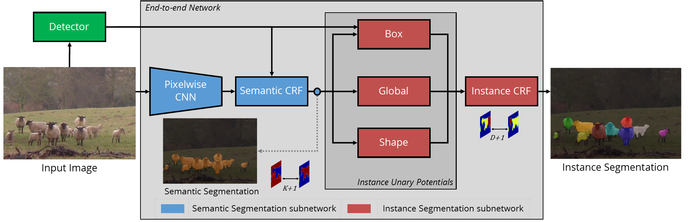

Abstract: Semantic segmentation and object detection research have recently achieved rapid progress. However, the former task has no notion of different instances of the same object, and the latter operates at a coarse, bounding-box level. We propose an Instance Segmentation system that produces a segmentation map where each pixel is assigned an object class and instance identity label. Most approaches adapt object detectors to produce segments instead of boxes. In contrast, our method is based on an initial semantic segmentation module, which feeds into an instance subnetwork. This subnetwork uses the initial category-level segmentation, along with cues from the output of an object detector, within an end-to-end CRF to predict instances. This part of our model is dynamically instantiated to produce a variable number of instances per image. Our end-to-end approach requires no post-processing and considers the image holistically, instead of processing independent proposals. As a result, it reasons about occlusions (unlike some related work, a pixel cannot belong to multiple instances) and produces far more precise segmentations, as shown by our substantial improvements at high \(AP^r\) thresholds.
